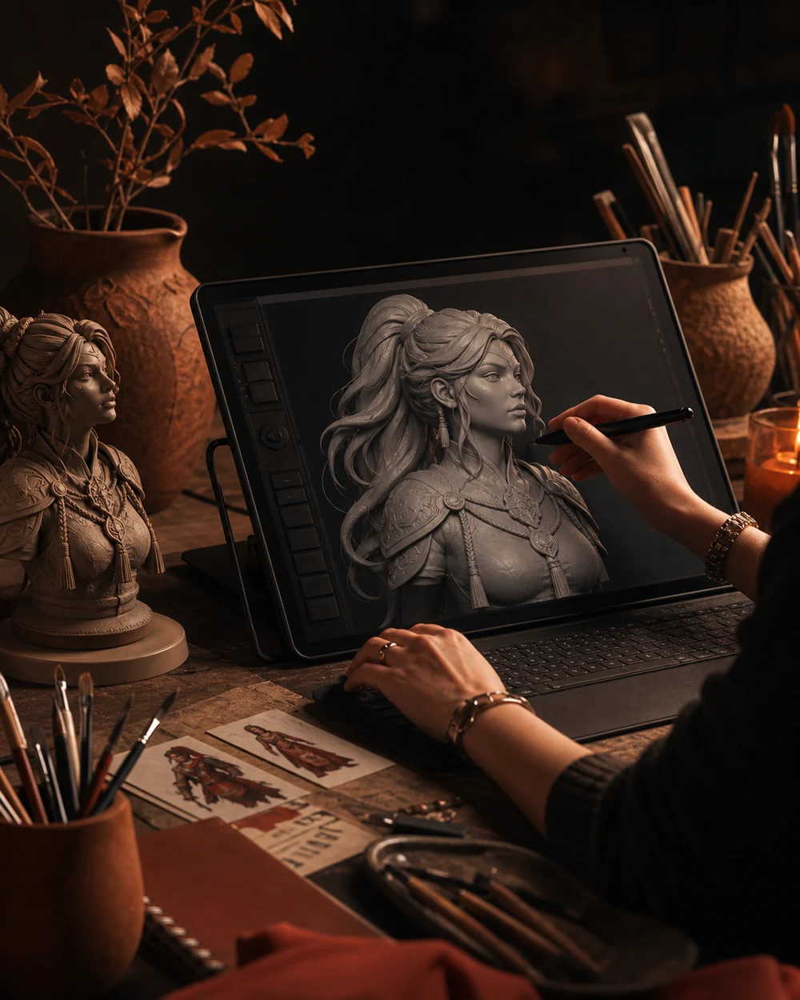

3D Character Artist
Production-Ready 3D Characters from Concepts, Sketches, and AI References.
Lesly creates expressive 3D characters, avatars, mascots, outfits, and game-ready assets from sketches, moodboards, written briefs, AI references, and existing concepts, with a focus on sculpting, modeling, retopology, UVs, textures, final renders, and production-ready delivery.

- 3D Character Artist
- Character Modeling
- Sculpting
- Retopology
- UV Mapping
- PBR Texturing
- Blender · ZBrush · Substance
Services
Character services for games, creators, brands, and real-time worlds.
Projects are quoted by scope, complexity, timeline, and deliverables. Small assets and consultation can start lower; complete character packages are scoped after reviewing references and technical requirements.
-
01
Concept / AI Reference to 3D Character
Turn a sketch, AI reference, moodboard, written brief, or rough idea into a polished 3D character with strong personality and usable deliverables.
-
02
Game-Ready Character Asset
Custom characters prepared for real-time pipelines with clean topology, UVs, textures, materials, and export-ready files.
-
03
Avatar / VTuber / Creator Character
Expressive custom avatars and 3D character identities for creators, streamers, VR/XR, and interactive experiences.
-
04
Brand Mascot / Product Character
Memorable 3D mascots and product characters for startups, apps, AI products, education brands, campaigns, and creator businesses.
-
05
Outfits, Skins, Props & Accessories
Stylized outfits, skins, props, clothing, and character add-ons for games, avatars, Roblox-style worlds, and creator identities.
-
06
Sculpting, Retopology, UVs & Texturing
High-poly sculpting, low-poly retopology, UV mapping, PBR or stylized texturing, materials, and final renders.
-
07
Art Direction & AI Workflow Support
Character exploration, style direction, reference organization, documentation, and production planning using sketches, references, moodboards, and optional AI-assisted ideation.
Work
Selected 3D character work.
Original site concept visuals created for this portfolio direction. They show the type of character presentation Lesly can lead with; technical production proof should still be replaced with true mesh, UV, texture, and handoff evidence when available.

Game-Ready Character
Original presentation render for the site direction. Replace with real topology, UVs, textures, and export proof when available.

Sculpting to Retopology
Illustrative process visual for staging. It is not a real topology screenshot or mesh proof.
Avatar Character
Original avatar concept board showing expression range, personality, and creator-facing presentation.

Mascot Character
Original mascot concept board for startup, creator, and product-character positioning.

Outfits, Skins & Accessories
Original outfit and accessory board showing costume read, material detail, and supporting asset ideas.

Concept to Character
Original concept-to-render visual showing how early direction can become a polished character presentation.
Case study
Original site concept case study.
A transparent case study for the generated site concept asset set. It documents visual direction and presentation assets without claiming shipped client work or real topology proof.

- 01Goal
Visual direction
Create a premium character-art direction for the final site using original generated visuals.
- 02Input
Prompted reference
Sketch-to-render and studio-presentation prompts established the character, palette, and asset slots.
- 03Process
Concept board
Generated boards show concept, sculpt-style, avatar, mascot, and outfit directions.
- 04Integrity
No fake topology
Illustrative process images are labeled as concept visuals, not real mesh, UV, or engine proof.
- 05Final
Web-ready renders
Assets are optimized WebP files sized for homepage, work cards, and case-study sections.
- 06Handoff
Replacement path
True Lesly production proof can replace this concept set using the same filenames and sections.
Process
Character production workflow.
A clear path from brief to delivery. Five stages, each with a defined output and a review checkpoint.
- 01
Brief & References
Define the character, visual style, use case, references, deliverables, timeline, and technical needs.
- 02
Character Design
Refine silhouette, anatomy, proportions, color, materials, and character personality.
- 03
Sculpting & Modeling
Create the character through sculpting, 3D modeling, high-poly or low-poly workflows.
- 04
Retopology, UVs & Textures
Prepare topology, UV mapping, texture maps, materials, and renders depending on scope.
- 05
Delivery
Final renders, turnarounds, BLEND, FBX, OBJ, texture maps, and handoff notes as agreed.
About
Painter and 3D Character Artist.
Painter by training, 3D character artist by craft. I build game-ready characters, avatars, mascots, outfits, and accessories — with a focus on production-ready handoff, not just final renders.

Lesly creates 3D characters, avatars, mascots, outfits, skins, accessories, and game-ready assets for games, creators, startups, agencies, and brands.
Her painting background supports color, form, anatomy, silhouette, texture, and storytelling. Her 3D work focuses on character design, sculpting, modeling, retopology, UVs, texturing, materials, final renders, and production-ready handoff.
Lesly also uses AI tools, AI agents, Codex, Claude Code, and MCP-connected workflows to support parts of her production process: reference organization, prompt-based visual exploration, simple portfolio and web materials, documentation, workflow automation, and project setup. The core work remains character modeling, sculpting, retopology, UV mapping, texturing, materials, final renders, and production-ready delivery.
- Discipline
- Stylized & game-ready characters
- Pipeline
- Sculpt · Retopo · UVs · Bake · Texture · Present
- Delivery
- FBX, source files, texture sets, handoff notes
- Working with
- Game studios, brand teams, creators, agencies
Workflow support
AI tools, AI agents, and MCP-connected workflows.
Lesly uses AI tools, AI agents, Codex, Claude Code, and MCP-connected workflows to support parts of her production process: reference organization, prompt-based visual exploration, simple portfolio and web materials, documentation, workflow automation, and project setup. These tools support the workflow. The core work remains character modeling, sculpting, retopology, UV mapping, texturing, materials, final renders, and production-ready delivery.
Production organization
Reference organization, documentation, project setup, and repeatable workflow support.
Portfolio / web support
Simple portfolio materials, web page updates, content structure, and project documentation.
Start a project
Tell Lesly about your character, avatar, mascot, outfit, or 3D asset.
Share the character idea, references, use case, timeline, and required deliverables. Include sketches, moodboards, written briefs, AI references, or existing character concepts if available.